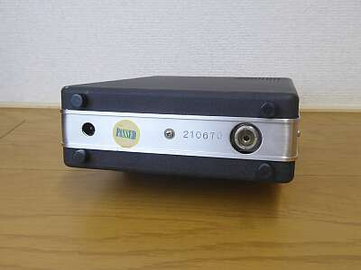
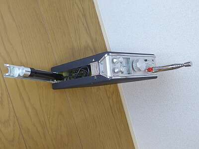
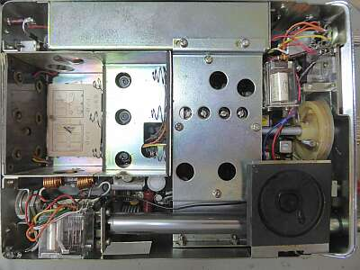
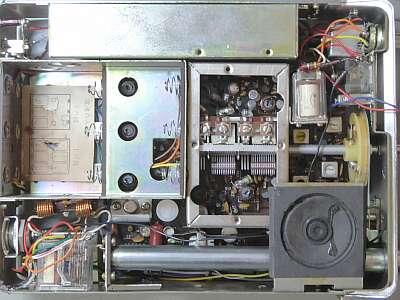
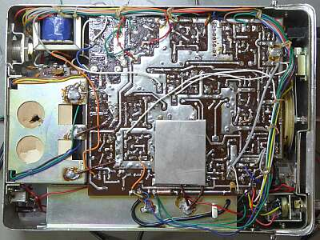
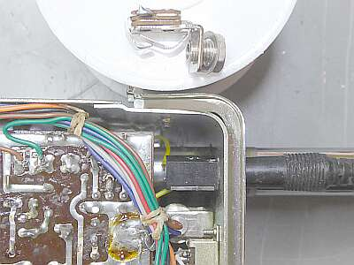

 |
リアパネル（底面）は、極めてシンプルです
アンテナ端子と外部電源ジャックのみです
|
 |
本機で、特徴的と思われることのひとつ
マイクロホンは、本体側面に収納できるようになっています
配線は直結で、マイクを単独で取り外したり、他のマイクを使うことはできません
ＰＴＴは、ロック式 昔のテレコ付属マイクのイメージです
この写真の時点では、ホイップアンテナとLIGHT-SWが非純正 |
 |
電池交換を行う側の「ふた」を開けた状態です
電池は９本・・・基準動作電圧は１３Ｖとなっています
使用電池は単二型です（一部２段に収納）
|
 |
補強を兼ねたシールド板を外した状態です
ＶＣを挟んで上側がＶＦＯ部
下側が受信のＴＯＰ ＲＦ－１ｓｔＭＩＸ部です
受信信号は、左から右へ、そしてスピーカー下の１ｓｔ-ＩＦ（７～１１ＭＨｚ）から上に、ここで４５５ＫＨｚの２ｎｄ-ＩＦに変換、ここから下にIFアンプ部が続き、最後に検波となります
アンテナ下右側は、ＡＦ段 左側が送信終段部です
左下のＡＮＴリレーから受信ＲＦ入力まで１０数ｃｍ普通の単線で配線してあります |
|  |
反対側の「ふた」を開けた中身です
シールド板の下（奥）がＶＦＯ部です
本機の送信は、２５MHｚ帯の一発発振を２逓倍して５０ＭＨｚ帯を得ていますが、その安定化のために受信用７～１１ＭＨｚのオシレータを送信時にも生かして、ＤＳＣ出力でバリキャップダイオードを動かし、安定化を図るという面白い設計がなされています
２５ＭＨｚの自励発振ドリフトを、７ＭＨｚ自励発振の安定度に抑える工夫です |
|
 |
今回一番の問題というかトラブルについて
感度低下というか得られる音量がとても小さい
ゲイン不足かと思い、ＲＦからＩＦまで調整しただけでは改善しません
Ｔｒを取り外してチェックをするも問題なし
原因は、なんとイヤホンジャックの接触不良
厄介なのは、取り付けサイズ（奥行）が最近のジャックに比べ長い・・・単純には最近のジャックでは長さが足らずパネルに頭が出ません
仕方ないので、パネルを外しシャーシの穴を拡大して、なんとかフロントパネル側でナットの取り付けができるよう工夫しました |
| あとひとつ、電源の逆接保護に直列に入っているダイオードの電圧低下が、受信音量や送信パワーに影響がでていたため、ショットキーダイオードに交換しました |